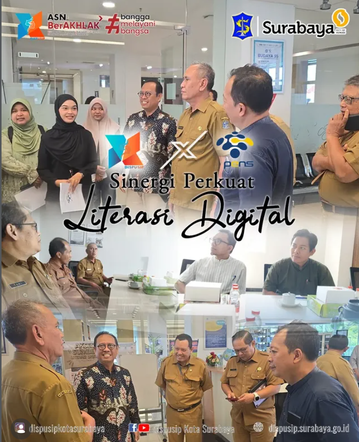

Sinergi Dispusip Kota Surabaya dan Perpustakaan PENS Perkuat Literasi Digital

Surabaya, 23 Januari 2026 Dinas Perpustakaan dan Kearsipan (Dispusip) Kota Surabaya menjalin sinergi awal dengan Politeknik Elektronika Negeri Surabaya (PENS) melalui kegiatan silaturahmi dan diskusi bersama sebagai langkah penjajakan kolaborasi dalam penguatan literasi digital di Kota Surabaya. Kunjungan yang dipimpin oleh Kepala Dispusip Kota Surabaya, Ir. Yusuf Masruh, M.M., tersebut menjadi bagian dari upaya membangun kerja sama lintas sektor dalam merespons tantangan literasi di tengah perkembangan teknologi dan transformasi digital yang terus berlangsung.
Rombongan Dispusip Kota Surabaya disambut oleh Wakil Direktur Bidang Kerja Sama, Hubungan Masyarakat, dan Sistem Informasi PENS, Dr. Ir. Firman Arifin, S.T., M.T., bersama jajaran dosen. Pertemuan berlangsung dalam suasana dialogis dengan pembahasan seputar peran perguruan tinggi vokasi dalam mendukung pengembangan literasi digital yang relevan dengan kebutuhan masyarakat. Melalui pertemuan ini, Dispusip Kota Surabaya dan PENS membuka peluang sinergi berkelanjutan, antara lain dalam pengembangan program literasi digital, peningkatan kapasitas sumber daya manusia, serta pemanfaatan teknologi yang bersifat aplikatif. Kolaborasi tersebut diharapkan dapat memperkuat ekosistem literasi yang inklusif dan adaptif, sekaligus memberikan manfaat nyata bagi masyarakat Kota Surabaya.